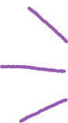
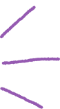
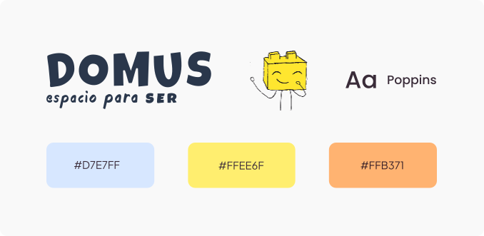

Contexto
¿Qué es Domus?
Espacio de psicología especializado en neurodivergencia
Acompañamiento a niños y adolescentes dentro del espectro autista. Método principal: Terapia Basada en Lego, un enfoque poco común que combina el juego con el desarrollo de habilidades sociales.
¿Qué necesitaban?
Rediseñar el sitio web desde cero
El objetivo era crear una presencia digital que comunicara la esencia del espacio: profesional y cercano a la vez. Un sitio que hablara a familias, profesionales de la salud e instituciones educativas en simultáneo.
El Problema
Servicios invisibles
Secciones anidadas que impedían entender la amplitud de la propuesta más allá de la Terapia con LEGO.
CV en lugar de espacio
El contenido hablaba de la trayectoria de la creadora, no del espacio ni de lo que hace por sus pacientes.
Sin identidad propia
Sitio construido sobre una plantilla genérica sin ninguna adaptación visual que reflejara la personalidad de Domus.
Sin valor diferencial
No quedaba claro por qué elegir Domus frente a otras terapias similares en Buenos Aires.
Formulario genérico
El contacto no diferenciaba el tipo de consulta, generando trabajo innecesario para la profesional.

Pregunta guía del proyecto
¿Cómo mostrar Domus como el espacio terapéutico profesional y cercano que realmente es?

Identidad visual
Palabras clave que guiaron el diseño:
Desafío central
Transmitir el juego como herramienta terapéutica sin caer en algo infantil. La identidad debía generar confianza en padres y profesionales, y al mismo tiempo conectar con el espíritu del espacio.

Proceso
Decisiones de diseño
Antes
Home centrada en la trayectoria y formación de la creadora
Después
Home que explica qué es Domus y su propósito desde el primer scroll
Antes
Tratamientos poco visibles al estar ubicados dentro de secciones anidadas
Después
Cada tratamiento con sección propia, detalle claro y expandible en mobile
Antes
Capacitaciones y colaboraciones sin visibilidad ni sección
Después
Secciones separadas con identidad propia para los nuevos servicios
Antes
Formulario de contacto genérico sin contexto
Después
Formulario con selector de tratamiento + campo "Derivado por" para filtrar consultas
Mayores retos y Logros
Retos
Logros